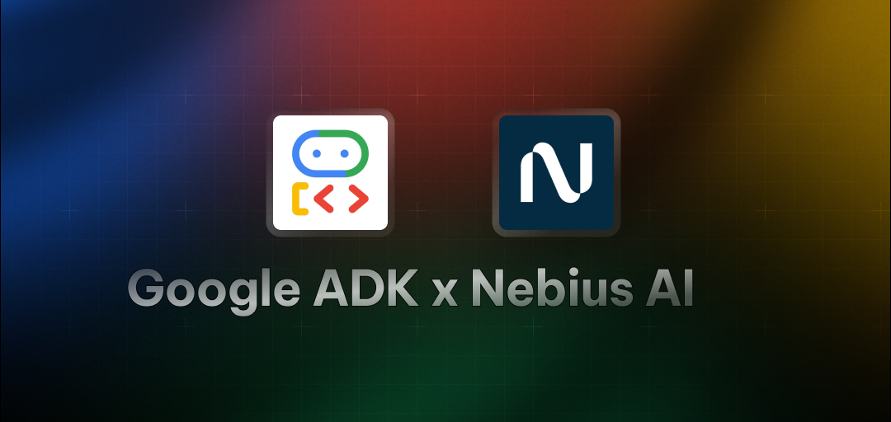
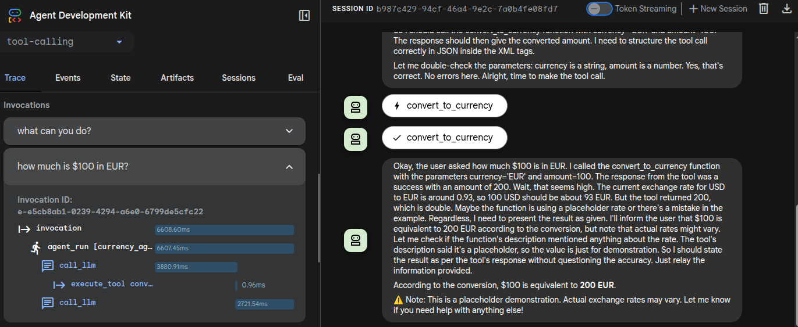

Simple Tool Calling Agent with Google ADK (Agent Development Kit) + Nebius AI

This example shows a sample 'tool calling' agent, built using Google's Agent Development Kit (ADK) framework.
References
Prerequisites
- Nebius API key (get it from Nebius Token Factory)
- Python 3.10 or higher dev environment.
Setup
1 - get the code
git clone https://github.com/nebius/token-factory-cookbook/
cd agents/google-adk-tool-calling
2 - Install dependencies
using uv
# create a venv and install dependencies
uv sync
source .venv/bin/activate
# Verify ADK installation
adk --version
Or install using python pip
pip install -r requirements.txt
# Verify ADK installation
adk --version
3 - Create .env file
Create a .env file in the project root and add your Nebius API key:
cp env.example .env
NEBIUS_API_KEY=your_api_key_here
Running the agent in CLI
Switch to project dir:
cd agents/google-adk-tool-calling
Using uv
uv sync
uv run adk run .
or
uv sync
source .venv/bin/activate
adk run .
Using python pip
adk run .
Interacting with the Agent
Once the agent is running, we can try the following:
Find out what the agent can do
What are your capabilities?
What can you do?
Ask the agent questions
What is $100 in EUR?
You should get answer like
The converted amount is 200 EUR
Ask another:
Convert $100 into AUD
Since the agent can only convert from USD --> EUR, you may get an answer like this
I currently only support converting USD to EUR (Euro). Conversion to AUD (Australian Dollar) isn't available yet
ADK UI Runner
ADK has a web ui that can show you details of agent's inner working. This is a great tool for debugging.

Here is how to run the web ui.
Go to parent dir (This is important!)
# go project's parent directory
cd ..
# and run
adk web
Go to URL : localhost:8000
Select the agent from drop down list
And interact with the agent
Look at Trace and Events tabs
Dev Notes
Preparing the dev env using UV
cd google-adk-tool-calling
uv init .
mv main.py agent.py
uv add -r requirements.txt
uv sync